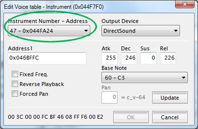
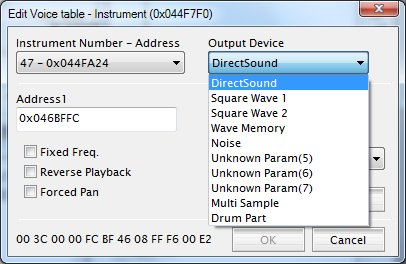
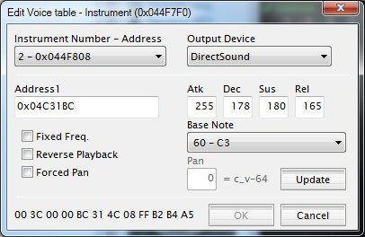
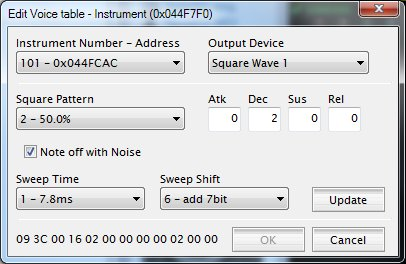
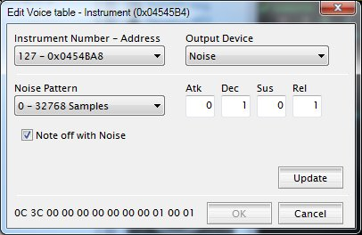
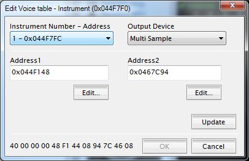
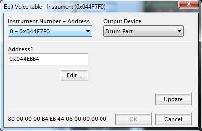
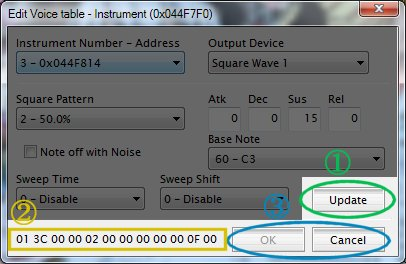

メイン画面で「Edit Voice table」を選択すると、このダイアログが表示されます。
「Instrument Number - Address」を選択すると、その音色番号に設定された情報が表示されます。

割り当てる音源を変更する場合は、「Output device」を使用したい音源に設定してください。
選択した音源によってウィンドウ中央の設定値の表示が変わり、それぞれの音源用の設定ができるようになります。
なお、「Unknown Param」は未定義です。値の保持のため持っているだけですので、選択しても何もできません。
１．DirectSound

Direct Sound 音色を設定します。
・Address1
音色の波形が書き込まれているアドレスを記入します。
先頭の 0x は、入力時にはあっても無くても16進数で認識します。
・Atk, Dec, Sus, Rel
音色の増加・減衰を ADSR で記入します。
ADSR についての説明は Web でぐぐってください。
GBA の DirectSound 音色では、出力は 0～255 の値を取り、以下のように計算されます。初期値は ATk 値です。
Atk(Attack) … 1 から 255 で、15.6ms ごとに出力に Atk 値 が加算され、255になると Decay に移行します。
Dec(Decay) … 0 から 255 で、15.6ms ごとに出力が Dec/256 倍に減衰していきます。
Sus(Sustain) … 0 から 255 で、Decay で減衰した値が Sus に到達した場合、この値で減衰がストップします。
Rel(Release) … 0 から 255 で、停止する命令を受けた場合に、現在の出力から 15.6ms ごとに出力が Rel/256 倍に減衰します。
※出力が 1 未満になった時に出力が終了します。
・Fixed Freq.
ドラム定義の場合、これをチェックすることで、音色が持っている周波数を無視し、
GBA 内部で使用している DirectSound 周波数で鳴らすよう指示します。
・Reverse Playback
音色を逆に再生するようです。（未確認）
・Base Note
ドラム定義を変更している場合、「60-C3」を基準にして、音色が持っている音程を上下することができます。
同じ音色を使って複数の音を作るために使用します。
Fixed Freq. が ON の場合は指定できません。
また、ドラム定義以外では無効です。
・Forced Pan, Pan
チェックするとパンポットを強制します。
常に Pan に書かれた位置から音が鳴るようになります。
なお、再生時にトラックにパンポットが指定されていると、上記位置からさらに指定のパンポット分位置が移動します。
２．Square Wave 1 , Square Wave 2

パルス波音色を設定します。
パルス波音色は 2 音ありますが、Sweep 系の処理が無いほかは同じです。
・Square Pattern
出力する波形の形を指定します。
選択できる値は 12.5%, 25%, 50%, 75% の4種類です。
・Atk, Dec, Sus, Rel
音色の増加・減衰を ADSR で記入します。
ADSR についての説明は Web でぐぐってください。
パルス波音源の出力は、1～15の値を取り、以下のように計算されます。初期値は 0 です。
Atk(Attack) … 0 から 255 で、Atk * 15.6ms ごとに出力が +1 され、int(トラックのボリューム*ノートのベロシティ/128) になると Decay に移行します。
※ Atk が 0 の場合、最初から最大値で Decay に移行します。
Dec(Decay) … 0 から 255 で、Dec * 15.6ms ごとに出力が -1 されます。
※ Dec が 0 の場合、最初から int(トラックのボリューム*ノートのベロシティ/128) * Sus /15 で Sustain に移行します。
Sus(Sustain) … 0 から 15 で、Decay で減衰した値が int(トラックのボリューム*ノートのベロシティ/128) * Sus /15 に到達した場合、減衰がストップします。
Rel(Release) … 0 から 255 で、停止する命令を受けた場合に、現在の出力から Atk*15.6ms ごとに出力が -1 されます。
※出力が 0 になった場合に出力が終了したことになります。
・Note off with Noise
音の出力が終了する場合に小さなプチノイズを出すかどうか設定します。
これにより、同じ音を連続して出しても、音が切れて聞こえるようになります。
※ Sappy では常に切れます。実機 or エミュレータで確認してください。
・Sweep Time, Sweep Shift
Square1 に実装されている Sweep 機能を使用します。
Sweep とは、発音した音色の音程が自動的に上がったり下がったりする機能のことです。
Sweep Time は音程が変化する時間を指定します。
Sweep Shift で、上下の方向および強さを指定します。
add 側が上がる方向、 sub が下がる方向で、bit 数は加減算量で、ビットが大きいほど増加が緩やかになります。
３．Wave Memory
波形メモリ音色を設定します。
・Address1
音色の波形が書き込まれているアドレスを記入します。
先頭の 0x は、入力時にはあっても無くても16進数で認識します。
・Atk, Dec, Sus, Rel
音色の増加・減衰を ADSR で記入します。
基本的にはパルス波と同じですが、音量設定が4段階しかないので、 Sappy の表示上では鳴っているのに出力されない等があります。
・Note off with Noise
音の出力が終了する場合に小さなプチノイズを出すかどうか設定します。
これにより、同じ音を連続して出しても、音が切れて聞こえるようになります。
※ Sappy では常に切れます。実機 or エミュレータで確認してください。
・Base Note
パルス波と同様、意味を持っていませんが、値の保持のために表示しています。
変更の必要はありません。
４．Noise

ノイズ音色を設定します。
・Noise Pattern
ノイズ出力のサンプル数を指定します。
32768 Samples は標準的なノイズです。 256 Samples はサンプル数が少ないため、ノイズというよりはノイズ混じりの音が鳴ります。
・Atk, Dec, Sus, Rel
音色の増加・減衰を ADSR で記入します。
パルス波と同等です。
・Note off with Noise
音の出力が終了する場合に小さなプチノイズを出すかどうか設定します。
ただし元がノイズ音色なのでほとんど意味がありません。
５．Multi Sample

マルチサンプルのアドレスを指定します。
・Address1
マルチサンプル用のボイステーブルを指定します。
先頭の 0x は、入力時にはあっても無くても16進数で認識します。
「Edit...」ボタンを押すことで、 Address1 にあるテーブルを編集することができます。
・Address2
マルチサンプル用のノートテーブルを指定します。
先頭の 0x は、入力時にはあっても無くても16進数で認識します。
「Edit...」ボタンを押すことで、 Address2 にある音色マップを編集することができます。
音色マップについての説明はこちら
６．Drum Part

ドラム用テーブルのアドレスを指定します。
・Address1
マルチサンプル用のボイステーブルを指定します。
先頭の 0x は、入力時にはあっても無くても16進数で認識します。
「Edit...」ボタンを押すことで、 Address1 にあるテーブルを編集することができます。

上で値を変更したら忘れずに①の「Update」ボタンを押してください。
Update ボタンを押すと、②に表示されているバイナリデータが更新され、値が確定したことを確認できます。
※Update ボタンを押さずに「Instrument Number - Address」を変更すると、設定内容が無効となりますのでご注意ください。
同様の操作で、必要な音色番号の設定を変更します。
最後に③の「OK」ボタンを押すと ROM イメージに変更した内容が書き込まれます。
逆に、「OK」を押さない限り、ROM イメージには一切変更を加えませんので、
「Cancel」を押すことで、いつでも値を反映せずにメイン画面に戻ることができます。